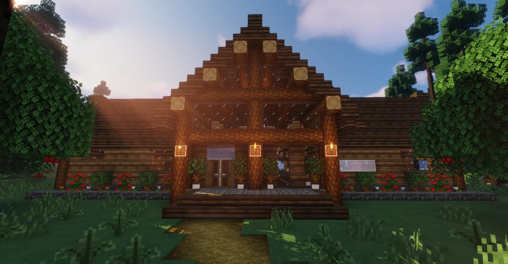
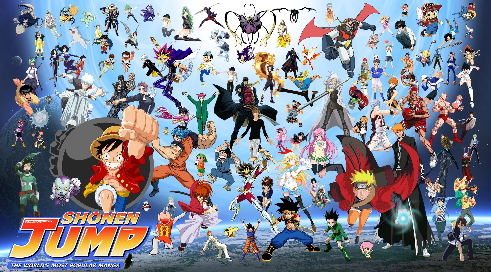

Games are Kool, and the one I like most is MINECRAFT. Minecraft is a sandbox game, so you can do whatever you want to do with it. You can build amazing structures, defeat the final boss, and tons of other things. But I like BLOWING STUFF UP!
 Get Minecraft!!! (Not Sponsored)Food is very yum. The most extremely yum food is Ramen. It is easy to make and good to have as a late night snack while watching Netflix. Ther are many kinds of Ramen, and many distinct flavours. Some of the are:
 More about ramen
More about ramen
Reading is Sooper Kool, and Fantasy realted genres usually catch my eye. I read as a way to pleasantly pass the time, especially during bus rides to and from my school. I have shifted my attention to reading manga, which is a form of Japanese comics.
 Read some Manga!